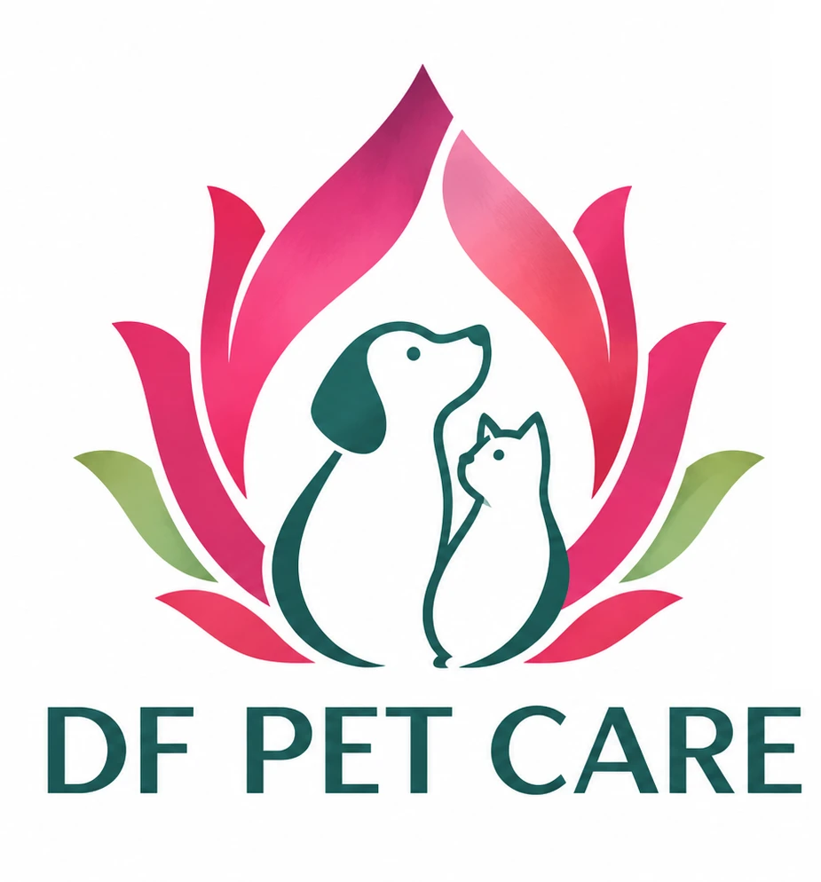

Our story
Inspired by family.
Rooted in science.
Because Every Pet Is Family.
At DF Pet Care, we believe every pet deserves a healthier, happier life alongside the families who love them.
Our name is inspired by the founder's son, affectionately nicknamed "Dragon Fruit". This personal connection reflects a belief at the heart of our brand: pets are not just companions; they are family. Their health and well-being deserve the same thoughtful care we give to those we love.

Rooted in Microbiome Science
Expertise with
a personal purpose.
Cindy Founder, DF Pet Care
Based in Hong Kong, DF Pet Care is a science-driven pet wellness brand dedicated to supporting microbiome health in dogs and cats.
Founded by a biotechnology professional with nearly a decade of experience in the global probiotics industry and a NAVC Veterinary Microbiome Certification, our brand brings together scientific understanding, ingredient expertise, and a passion for pet wellness.
We recognize that the microbiome plays an important role in pet health—not only in the gut, but also in the mouth, on the skin, and beyond.
Our commitment
The Right Science. The Right Solution.
We believe that meaningful pet wellness solutions begin with understanding specific needs and selecting the right ingredients—not simply adding more.
Guided by scientific evidence, thoughtful formulation, and a commitment to quality, we aim to develop targeted solutions that support the everyday well-being of cats and dogs.